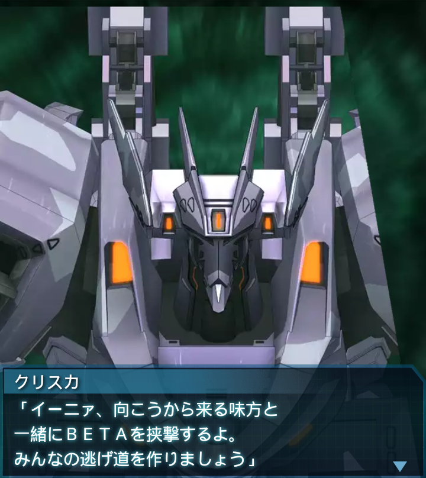

中国・H-01Bあ号標的ブロック2
『誰』
「ＢＥＴＡの数が一向に減らない！
あの大口を開けている第二隔壁を
どうにかしなければ！！」
崔亦菲
「その向こうにいる新種のＢＥＴＡ
――奴がガンなんです！あれさえ
どうにかできれば…」
『誰』
「だが、あそこまで突っ切るだけの
余力はない！天井を通って後ろに
回り込むにも厳し過ぎる！」
崔亦菲
「でもこのままじゃじり貧です！
私が何とか前に出て――」
？？？
「全員隔壁の入り口から離れろ！
爆発するぞッ！！」
崔亦菲
「――ッ！？な、何ッ！？
前方から所属不明機接近！
ＩＦＦは青、ですが…誰！？」
？？？
「これよりＳ－１１を爆破する！
新種のデカブツはそれで終わりだ！
これ以上後続は来ない！」
？？？
「最後の波を凌ぐんだ！
俺達も第二隔壁側からケツを叩く！
わかったな！？」
『誰』
「り、了解だが貴官の名前を――」
崔亦菲
「所属不明機引き返します！」
ズンッ！！！！！
『誰』
「よし！ＢＥＴＡを殲滅しながら
前進！第二隔壁まで進む！」
『誰』
「誰かは知らないが、『下』の
ルートを突き進んで来た強者達だ。
顔を拝んでやろうじゃないか！」
崔亦菲
「――了解！！」

「ユウヤ、たのしいね。ユウヤが
いてクリスカがいて、わたしも
いっぱいいる」
「クリスカ、たのしいね。だいすき
なみんなでたたかうのはすき」
クリスカ
「そうだね、私も楽しいよ。だから
あと少し頑張ろうね、イーニァ」
ユウヤ
「…しかし、気がついてみれば突然
こんな世界に放り出されて、未だに
よく訳がわからねえ…」
ユウヤ
「だがどんな世界だろうがオレは…
クリスカが好きだった世界を、
絶対に護ると決めたんだ！」
クリスカ
「…私だと？出会った時から意味
不明な事を言っていたが…。この期
に及んでも相変わらずだな――」
クリスカ
「――ユウヤ・ブリッジス。
ふん…………不思議な男だ」
ユウヤ
「何も知らなくていい。そしてこの
戦いが再びオレとおまえを分かつ
ものだったとしても――」

ユウヤ
「混じり合った世界が元に戻って
しまうものだとしても…それが世界
の未来の為ならオレはやるぜ！」
「中隊全機！残りのＢＥＴＡを
片付ける！奴らはあ号標的を
護る事に夢中だ」
「一目散に走り寄る奴らのケツに、
ありったけの弾を撃ち込んでやれ！
１匹たりとも逃がすな！」
「ユウヤ、さっきのひとがちかづい
てくるよ。すごいね、ユウヤと
おなじぐらいつよいのかな？」
ユウヤ
「そうかもな。よし、こっちからも
挨拶に出向いてやろうぜ。
ＢＥＴＡを蹴散らすぞ！」

クリスカ
「イーニァ、向こうから来る味方と
一緒にＢＥＴＡを挟撃するよ。
みんなの逃げ道を作りましょう」
「間もなく、あ号標的へのＳ－１１
設置が終わる。急げ！脱出ルートを
確保するんだ！――行けッ！」
「「「――了解！」」」